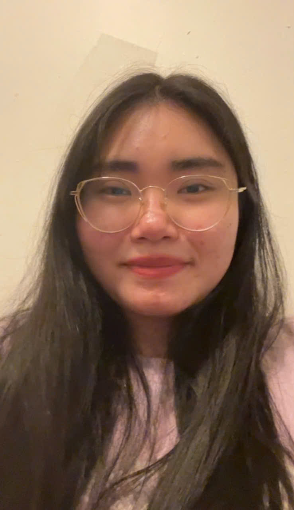

Tien Tran

Summary
I’m an aspiring software developer studying cybersecurity, and my background in customer service and teaching equips me well for the company culture. My strong independent skills, dedication to excellence, and good listening abilities further enhance my fit for the team.
Education
Associate of Applied Science, Cybersecurity- Community college of philadelphia (2023- 2025)
Work Experience
English Tutor - H&H English
May 2023- October 2023
- Help students understand their subjects and improve their grades.
- Grade assignments and tests, giving feedback to guide their learning.
- Update parents on their child’s progress and suggest ways to support them at home.
Remote Patient Coordinator- Vietnamese Dental Office
May 2024- Present
- Schedule, confirm, and reschedule patient appointments through phone calls and online platforms, ensuring a seamless virtual experience.
- Provide assistance via phone, email, or chat to address patient inquiries, resolve issues, and ensure satisfaction without in-person interactions.
- Reach out to patients who missed appointments, follow up on their reasons for absence, and provide information about rescheduling, while promoting services to encourage re-engagement.
Skills
- Customer service:⭐️⭐️⭐️⭐️⭐️
- Programming languages: Python, Javascript and Java:⭐️⭐️⭐️⭐️⭐️
- Database management:⭐️⭐️⭐️⭐️⭐️
Other
Best contact: trantuyennn12345@gmail.com